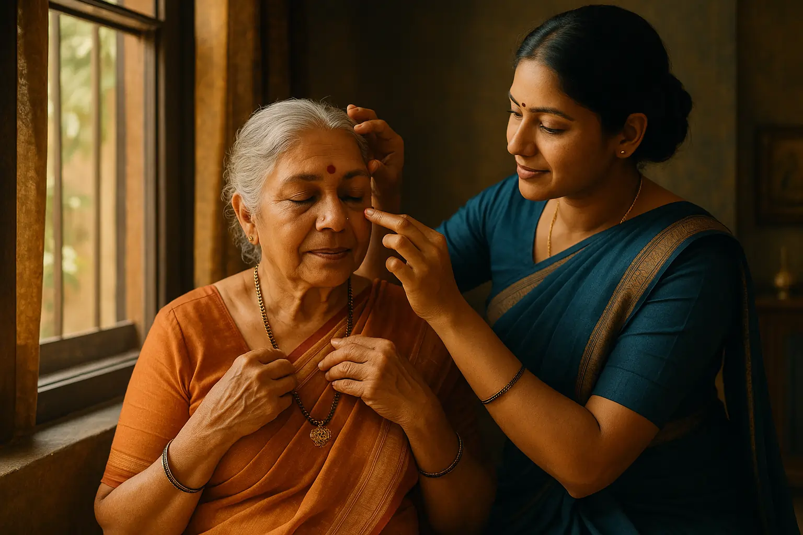

Personal Care Assistance: Bathing, Grooming, Dressing: Maintaining Dignity


15
DEC
Apricot Care
Gauri stood at the bathroom door, her hands trembling slightly. For seventy-two years, she had been independent. She bathed herself, styled her own hair, picked out her clothes each morning. But arthritis had changed things. Her fingers wouldn't cooperate. Her balance felt uncertain. When her daughter suggested she might need help with these intimate tasks, Gauri felt something shift inside her. Not just fear or frustration, but a deeper loss. She wasn't ready to let go of this part of herself.
Then something surprising happened.
When Gauri started working with a caregiver who understood that bathing wasn't just about getting clean, everything changed. The caregiver didn't treat her like a project to complete. Instead, she asked about Sarah's preferences, let her choose the water temperature, and respected moments when Gauri wanted to do things herself. What Gauri discovered was this: her independence didn't disappear when help arrived. It transformed.
This is the real story behind personal care assistance. Not just about physical tasks, but about preserving the dignity and self-worth of people who need help with bathing, grooming, and dressing.
Personal care assistance refers to help with intimate daily activities including bathing, grooming, and dressing. These are essential services that preserve both physical health and emotional well-being for older adults and people with mobility challenges.
Why Personal Care Assistance Goes Beyond Basic Hygiene
Most people think personal care is simply about cleanliness. It's not.
When we help someone bathe or groom themselves, we're doing something far more meaningful. We're supporting their independence during moments when they feel most vulnerable. We're acknowledging their personhood when their own body feels like it's working against them.
Research shows that regular grooming and personal hygiene routines are directly connected to mental health, self-esteem, and even recovery outcomes in rehabilitation settings. At a neuro rehabilitation centre in Pune like Apricot Care, we see this connection every day. Patients who maintain their grooming routines recover faster and show better emotional resilience than those who neglect these activities.
Here's what most websites don't tell you: the way personal care is delivered, with respect or without it, can actually affect a person's healing process. When someone feels respected and in control during intimate care moments, they're more likely to cooperate with other aspects of their treatment, including physiotherapy and rehabilitation exercises.
The Emotional Reality of Accepting Personal Care Help
Before we talk about techniques and equipment, let's address what's really happening emotionally.
Accepting help with bathing or dressing isn't easy for anyone. It means accepting vulnerability. It means trusting someone else with your body at a time when you might already feel like your body has betrayed you.
Many of our patients come to the neuro rehabilitation centre dealing with post-stroke recovery, traumatic injuries, or neurological conditions. They're not just managing physical changes. They're grieving the loss of independence they took for granted. Some feel shame. Others worry about being a burden.
What makes the difference: caregivers who understand this emotional journey.
A good caregiver doesn't rush. They explain what they're doing before they do it. They offer choices. Which towel to use? What time to bathe? What grooming products feel best? These small choices restore a sense of control that can feel revolutionary to someone who's lost so much.
Bathing Assistance: More Than Getting Clean
Bathing seems simple until you realize why it's so complicated.
Think about all the steps involved in a normal shower: getting undressed (coordination), stepping in (balance), not slipping (proprioception), adjusting water temperature (sensation), washing your own back (mobility and flexibility). For someone with arthritis, balance problems, or recovering from a stroke, any of these steps can be dangerous.
Here's what caregivers at a physiotherapy clinic in Pune focus on:
Bathing isn't about perfection. It's about safety and comfort. A good approach includes:
Creating a safe environment. Grab bars, non-slip mats, and shower chairs aren't optional. They're essential. A caregiver should also keep the bathroom warm to prevent the shock of temperature changes.
Understanding sensory sensitivities. People with neurological conditions sometimes experience hypersensitivity to water temperature or pressure. A caregiver who checks temperature and allows adjustment prevents distress.
Maintaining privacy. Covering areas of the body not being washed with towels shows respect. Simple, but powerful.
Starting with less-threatening areas. Beginning with hands or feet before moving to other body areas helps build trust and cooperation.
Offering control. Letting the person hold the washcloth or guide where cleaning happens maintains their sense of agency.
Most websites focus on safety equipment. That's important. But they miss the psychological component. How you bathe someone matters as much as whether you bathe them safely.
Grooming: The Overlooked Dignity Multiplier
Here's something that surprises people: grooming affects recovery and mental health more than most therapists discuss.
When someone gets their hair done, shaves, or has their nails trimmed, something shifts psychologically. They feel more like themselves. They have more confidence. They're more motivated to participate in their rehabilitation.
At a neuro rehabilitation centre, we've noticed that patients who maintain grooming routines show measurably better emotional outcomes. They're less likely to develop depression. They engage more actively with their therapy. They maintain social connections better.
Why does this matter? Because appearance is connected to identity. When you look like yourself, you feel more like yourself.
Grooming services include:
- Hair washing, combing, and styling (maintaining their preferred appearance, not what's convenient)
- Shaving that respects their preferences for beard style or facial hair
- Nail care that prevents infections and maintains appearance
- Skincare routines adapted for aging or sensitive skin
- Oral hygiene assistance, which we'll discuss separately because it's important
The cultural piece most articles ignore: Grooming preferences are deeply personal and often connected to cultural or religious background. Some people have specific grooming traditions. A respectful caregiver learns these preferences and honors them.
The Oral Health-Nutrition Connection Nobody Talks About
Here's a surprising connection that matters for recovery: oral health directly impacts nutrition, which directly impacts skin healing and overall rehabilitation success.
If someone struggles with dental health or oral care, they have trouble chewing. When chewing is painful or difficult, people eat less. When they eat less, they don't get enough protein, vitamins, or minerals to heal properly. For someone recovering from a stroke or injury, this matters enormously.
A caregiver providing grooming assistance includes oral care. This means helping with tooth brushing, denture care if needed, and sometimes helping coordinate dental care. This isn't vanity. It's part of the rehabilitation process.
Dressing Assistance: Independence Through Adaptation
Dressing seems like it should be simple. It's not.
Fine motor skills are the ability to button, zip, and tie. These are some of the first things that fade with age or neurological conditions. Someone with arthritis can't work small buttons. Someone recovering from a stroke might have weakness on one side that makes dressing nearly impossible.
Here's where most articles miss the point: assistive devices and adaptive clothing aren't about giving up independence. They're about preserving it.
Adaptive clothing solutions include:
- Velcro closures instead of buttons (easier to manage)
- Side zippers for easy access
- Magnetic closures that don't require fine motor skills
- Clothing with open backs for monitoring wounds or medical devices
- Sensory-friendly materials for people with skin sensitivity
These aren't limitations. They're solutions that let people dress themselves when otherwise they couldn't.
The dressing process itself matters:
- Organizing clothing so the person can see options and choose
- Offering step-by-step help instead of taking over completely
- Letting someone do what they can while assisting with what they can't
- Respecting color preferences and personal style
When dressing is handled with respect for independence, it becomes confidence-building instead of frustrating.
The Psychology of Vulnerability: What Caregivers Need to Understand
This is the part that separates basic caregiving from excellent care.
When someone needs help with intimate personal care, they're in a vulnerable state. If that vulnerability is treated carelessly, it damages self-esteem and can actually slow recovery. If it's treated with respect, it strengthens the person's sense of worth and resilience.
The emotional reality includes:
Fear of embarrassment. Many people worry about being seen in vulnerable situations. A caregiver who respects privacy and moves naturally through these moments reduces this fear.
Loss of control. When your body doesn't cooperate, it feels like everything is being taken from you. Offering genuine choices, even small ones, restores some sense of control.
Anxiety about dependence. Some people worry they're becoming burdens. A caregiver's calm, matter-of-fact approach to caregiving (not treating it as heroic or burdensome) helps normalize the situation.
Dementia-specific challenges. For people with dementia, memory loss means they might feel anxiety about being bathed or dressed by someone they don't recognize, even if they've seen this caregiver daily. Consistent routines, gentle explanation, and patience become even more important.
What Gender Preferences and Cultural Considerations Mean
Here's something most resources overlook: for many people, having a same-gender caregiver for intimate personal care isn't about being difficult. It's about fundamental comfort and cultural values.
Research shows that 58% of female patients prefer female caregivers for bathing and grooming assistance. This isn't arbitrary. It's about modesty, cultural background, and feeling safe.
At a physiotherapy clinic in Pune, our team understands the diverse cultural backgrounds of our patients. Some have religious practices around modesty. Others have deeply held cultural beliefs about who should provide intimate care. These aren't obstacles to work around. They're basic respect to honor.
A good rehabilitation facility arranges caregiving teams with these preferences in mind. At Apricot Care, we recognize that honoring these preferences isn't a luxury. It's fundamental to care.
Managing Challenging Behaviors: Understanding What's Really Happening
If someone resists bathing or dressing, it's not stubbornness.
It's communication. The person is expressing fear, discomfort, confusion, or anxiety in the only way they know how.
Common reasons for resistance:
- Fear of falling or getting hurt
- Confusion about what's happening (especially with dementia)
- Temperature sensitivity or sensory overwhelm
- Painful conditions that make movement difficult
- Not recognizing the caregiver
- Negative past experiences with bathing or personal care
What works:
Approaching resistance with curiosity instead of frustration. A caregiver might ask: "What's worrying you about this?" or "What would make this easier?"
Sometimes it's simply a matter of adjusting timing, temperature, or approach. Other times it requires patience and consistency to rebuild trust.
Creating a Dignified Personal Care Plan
Genuine personal care assistance starts with understanding what matters to each individual.
A dignity-centered care plan includes:
- Personal preferences (favorite times for bathing, preferred grooming products)
- Mobility and safety considerations
- Any pain or physical limitations
- Cultural or religious preferences
- Previous negative experiences with personal care
- Family involvement in decision-making
This isn't paperwork for paperwork's sake. It's the foundation for care that actually respects the person receiving it.
At Apricot Care, our team develops personalized care plans for every patient at our neuro rehabilitation centre in Pune. We work with families to understand what matters and what works. We adjust as the person's needs change. This flexibility and personalization is what transforms personal care from a task into something that preserves dignity.
The Recovery Connection: Why This Matters for Rehabilitation
Here's why this matters beyond just comfort: personal dignity and emotional well-being directly affect rehabilitation outcomes.
Patients who feel respected and maintain their grooming and personal care routines show better:
- Mental health outcomes
- Cooperation with therapy
- Recovery from neurological conditions
- Motivation to participate in rehabilitation
- Social engagement and quality of life
At a neuro rehabilitation centre, personal care isn't separate from recovery. It's part of recovery.
When Professional Help Makes a Difference
Sometimes family members can provide personal care assistance. Often, professional help becomes necessary. Not because family members don't care, but because the physical demands become too much or the situation requires specialized knowledge.
A physiotherapy clinic in Pune or a full-service rehabilitation center can provide:
- Professional caregivers trained in dignity-centered care
- Equipment and adaptations specific to individual conditions
- Coordination with rehabilitation therapy
- Respite care so family members can rest
- Expertise in managing challenging situations
This isn't giving up. It's making sure the person gets the best possible care.
Moving Forward: Your Next Step
Personal care assistance isn't about loss of independence. When delivered with respect, it's about transformation and dignity preserved during vulnerable times.
If you're managing recovery from a stroke, injury, or neurological condition, or if you're supporting a loved one through this journey, professional guidance can make all the difference. At Apricot Care Assisted Living and Rehabilitation, our team specializes in holistic care that respects your dignity while supporting your recovery.
What's one small step you can take today to ensure that personal care (yours or a loved one's) is being delivered with the respect and dignity everyone deserves?